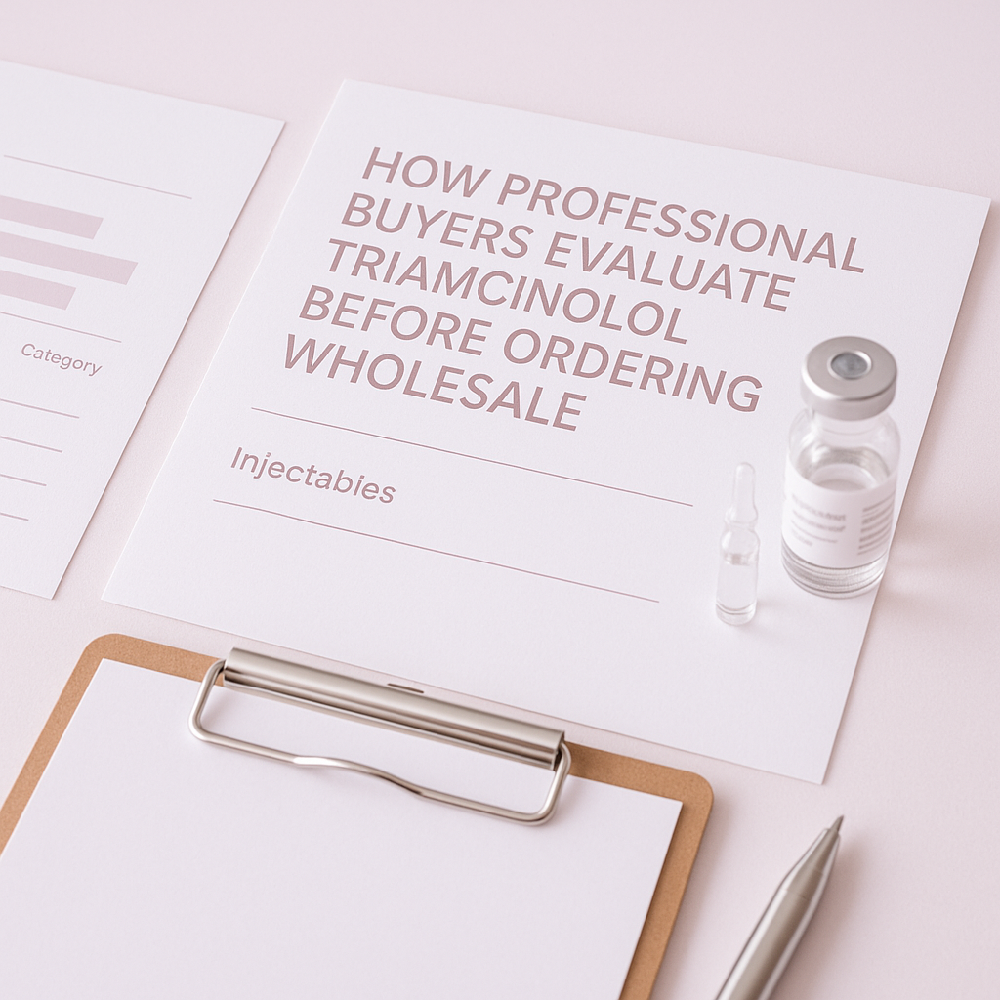
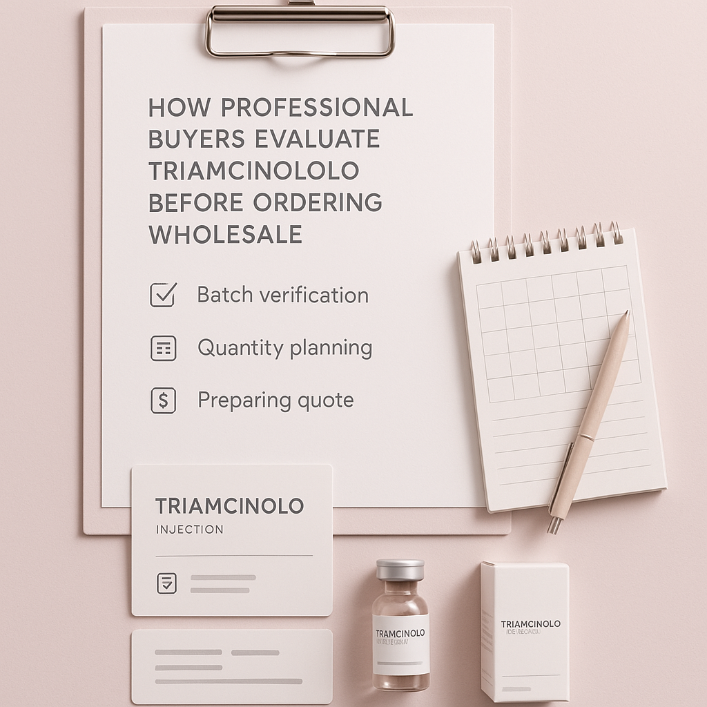

Learn how professional buyers assess Triamcinolo before making wholesale purchases, ensuring optimal sourcing for clinics and resellers.
For professional buyers in the medical supply industry, sourcing injectables like Triamcinolo can be a complex task. With various suppliers and product specifications available, it’s crucial to ensure that you are making informed decisions that align with your business needs. Understanding how to evaluate Triamcinolo before placing a wholesale order is essential for maintaining quality and efficiency in your operations.
This guide aims to provide professional buyers with practical insights into the evaluation process for Triamcinolo. By focusing on key criteria and considerations, you can streamline your purchasing strategy and enhance your procurement practices. The right sourcing decisions can lead to improved patient care and operational efficiency.
Key Takeaways
- Understand the product specifications and quality standards for Triamcinolo to ensure compliance.
- Evaluate suppliers based on communication, reliability, and delivery capabilities to mitigate risks.
- Consider packaging options and batch visibility for better inventory management and traceability.
- Assess minimum order quantities (MOQ) to optimize your purchasing strategy and cash flow.
- Prepare detailed information for quotes to ensure accurate pricing and availability, reducing delays.
What this guide covers
- Understanding Triamcinolo
- Identifying relevant buyers
- Comparison criteria for suppliers
- Checklist before requesting a quote
- Logistics considerations
- MOQ and reorder planning
- Frequently asked questions
What buyers should understand first

Triamcinolo is a corticosteroid commonly used in various medical applications, primarily recognized for its anti-inflammatory properties. As a professional buyer, it's important to understand that this injectable product is typically utilized in clinical settings where inflammation control is necessary. Buyers should focus on sourcing high-quality Triamcinolo that meets regulatory standards and is suitable for clinical use. While treatment protocols are not the focus here, understanding the product's applications can help you better serve your clients and patients.
In the context of procurement, it’s essential to recognize the importance of quality assurance and supplier reliability. The injectables market is highly regulated, and ensuring that the products you source comply with local and international standards is critical for maintaining your business's reputation and operational integrity.
Which buyers is this most relevant for?
This guide is particularly relevant for clinics, spas, resellers, and distributors who are looking to buy Triamcinolo wholesale. Each of these buyer types has unique order planning needs. For instance, clinics may require consistent supplies for patient treatments, while resellers might focus on stocking a variety of products to meet customer demand. Distributors often need to maintain a diverse inventory to cater to different client requirements.
Understanding your specific business scenario will help you evaluate the necessary criteria for sourcing Triamcinolo effectively. For example, a clinic may prioritize reliability and speed of delivery, while a reseller may focus on cost-effectiveness and product variety. Knowing your priorities will guide your procurement strategy and supplier selection process.
How to compare options before ordering
When evaluating different options for Triamcinolo, consider the following criteria:
- Product Type: Ensure that the Triamcinolo formulation meets your specific needs, including concentration and volume.
- Brand Reputation: Research suppliers and brands known for quality and reliability. Look for reviews and testimonials from other buyers.
- Packaging: Look for options that facilitate easy handling and storage, such as single-dose vials or bulk packaging.
- Batch/Expiry Visibility: Ensure that suppliers provide clear information on batch numbers and expiration dates to manage inventory effectively.
- Supplier Communication: Assess how responsive and informative potential suppliers are. Good communication can prevent misunderstandings and delays.
- Destination Requirements: Confirm that the supplier can meet your shipping and delivery needs, including any specific regulations for your location.
Buyer checklist before requesting a quote

- Define your required quantities and variants of Triamcinolo, including any specific formulations.
- Gather information on your business's shipping requirements, including destination and preferred delivery times.
- Prepare documentation for any regulatory compliance needed, such as licenses or permits.
- Clarify your budget and pricing expectations to avoid surprises during negotiations.
- List any specific packaging or labeling requirements that may be necessary for your operations.
- Determine your preferred payment terms and conditions to streamline the purchasing process.
Shipping, packing and documentation questions
When it comes to logistics, buyers should consider several factors:
- What are the shipping options available for Triamcinolo, and how do they align with your delivery needs?
- How will the product be packed to ensure safe delivery, especially for temperature-sensitive items?
- What documentation is required for customs clearance, and how will this be handled?
- Are there specific storage conditions that need to be maintained during shipping to ensure product integrity?
- How will tracking information be provided during transit to keep you informed?
MOQ, quotation and reorder planning
Understanding minimum order quantities (MOQ) is essential for effective procurement. When preparing to request a quote, consider the following:
- Determine the quantities of Triamcinolo you need based on your business's demand and projected usage.
- Identify any variants or specific formulations required to meet your clients' needs.
- Provide detailed destination information to ensure accurate shipping quotes and delivery timelines.
- Plan for reorder cycles based on your inventory turnover rates to avoid stockouts.
- Contact SOLA to confirm current availability and wholesale quotation options, ensuring you have the most accurate information for your purchasing decisions.
FAQ
What is Triamcinolo used for?
Triamcinolo is commonly used for its anti-inflammatory properties in various medical applications.
How do I find a reliable wholesale supplier?
Evaluate suppliers based on their reputation, communication, and delivery capabilities. Look for reviews and industry feedback.
What should I consider when planning my orders?
Consider your business's demand, MOQ, and shipping requirements when planning orders to ensure a steady supply.
How can I ensure product quality?
Research suppliers and request documentation that verifies product quality and compliance with regulations to safeguard your operations.
What is the best way to request a quote?
Prepare detailed information about your needs, including quantities and shipping details, to ensure accurate quotes and avoid delays.
Contact SOLA for wholesale quotation via WhatsApp.
Planning a wholesale request?
Send product names, quantities and destination for a tailored discussion.
Contact SOLA on WhatsApp →General educational content for professional buyers. Not medical, legal, regulatory or import advice.